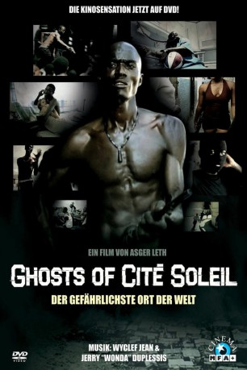

#5761 Ghosts of Cité Soleil
 
 IMDB-Wertung: 7.1 / 10
IMDB-Wertung: 7.1 / 10  Metascore: 0
Metascore: 0 
Zwei Brüder sind gefangen in einem System der politischen Gewalttätigkeit. Sie sind Gang-Anführer in Präsident Aristides geheimer Armee von Slum Gangs. Einer will für den Präsidenten kämpfen, der andere will aussteigen. Sie leben in Cité Soleil, einem Slum von Port-au-Prince, dem gefährlichsten Ort der Welt. Ihre Chancen zu überleben sind gering...
Jahr: 2006
Dauer: 85 Minuten
FSK:
Land: Dänemark Studio: Sony BMG Feature FilmsTonspuren:
Untertitel:
Auflösung: 1080p (1920x1048) Größe: 5160 MB
Genre: Action, Drama, Musik, Krieg, Dokumentation, Liebe
Regisseur: Asger Leth, Milos Loncarevic
Drehbuch: Tony Griffin
Soundtrack:
Darsteller:
- Wyclef Jean als Himself
- Winson '2Pac' Jean als Himself
- James 'Bily' Petit Frère als Himself
- Éleonore 'Lele' Senlis als Herself
Datei: X:\Dokumentationen\Dokus(A-Z)\Ghosts of Cité Soleil (2006, FSK, 1920x1048).mkv seit 20.03.2017
Festplatte: HD Serien(SU-Z)+Dokus+Musik
 Es gibt insgesamt 34 Filme in der Gruppe 'Dokumentationen\Dokus(A-Z)'
Es gibt insgesamt 34 Filme in der Gruppe 'Dokumentationen\Dokus(A-Z)'